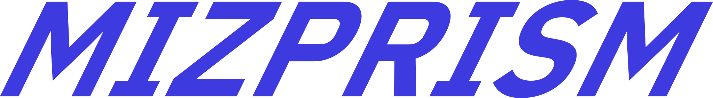
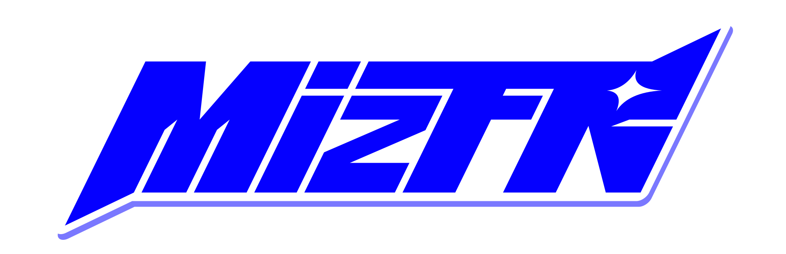

"テクノロジーってかわいい"をモットーとしています

VRChat ワールド向けの描画最適化ツール
Ver 0.4.4 (2026/11/07)
このバージョンでは、主な使い方は描画の負荷を減らすことです。ワールドの容量を減らす効果は補助的なもので、強度によっては容量が増えることもあります。
測定の結果は、条件つきで GitHub のページにまとめています。
BOOTH のショップのページのメッセージか、X の @mizprism からお送りください。